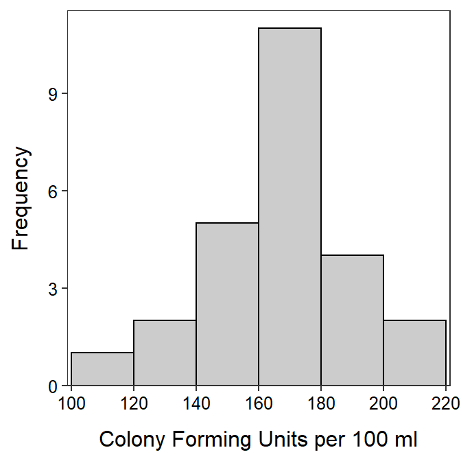

Fecal Coliform Counts
 Fecal coliform is a bacterium that originates in the intestines of warm-blooded animals and, thus, may be found in their feces. Organic matter containing fecal coliform may be washed into lakes and streams in runoff following large rain events. In lakes and streams, the fecal coliform may lead to the growth of pathogens that are dangerous to the health of humans, or reduce oxygen available to fish and other aquatic life. Thus, fecal coliform levels are routinely monitored in many waterbodies in the United States.
Fecal coliform is a bacterium that originates in the intestines of warm-blooded animals and, thus, may be found in their feces. Organic matter containing fecal coliform may be washed into lakes and streams in runoff following large rain events. In lakes and streams, the fecal coliform may lead to the growth of pathogens that are dangerous to the health of humans, or reduce oxygen available to fish and other aquatic life. Thus, fecal coliform levels are routinely monitored in many waterbodies in the United States.
Students recorded fecal coliform counts (number of colony forming units (CFU) per 100 ml) in water samples from a nearby lake following a rainstorm that resulted in considerable runoff. The results from their samples are in Table 1 and Table 1. Test, at the 5% level, if these results suggest a difference from the mean of 178 CFU/100ml predicted by a computer model.
Table 1: Summary statistics for the fecal coliform counts in water samples from a nearby lake following a rainstorm.
n mean sd min Q1 median Q3 max
25.00 168.19 22.20 112.55 151.37 170.48 179.19 208.82 
Table 1: Histogram for the fecal coliform counts in water samples from a nearby lake following a rainstorm.
 Common wisdom has it that the world is becoming more civilized. This would suggest that nation-states are killing fewer of their citizens (including capital punishment, deaths in civil and international wars, and all state-sponsored violence) than was once the case. An analysis of history textbooks suggests that, in a typical year in the nineteenth century, the mean number of citizens killed by the typical nation-state was 4,104. To examine if the world is becoming more civilized, the number of deaths from state-sponsored violence was recorded from records in the archives of
Common wisdom has it that the world is becoming more civilized. This would suggest that nation-states are killing fewer of their citizens (including capital punishment, deaths in civil and international wars, and all state-sponsored violence) than was once the case. An analysis of history textbooks suggests that, in a typical year in the nineteenth century, the mean number of citizens killed by the typical nation-state was 4,104. To examine if the world is becoming more civilized, the number of deaths from state-sponsored violence was recorded from records in the archives of